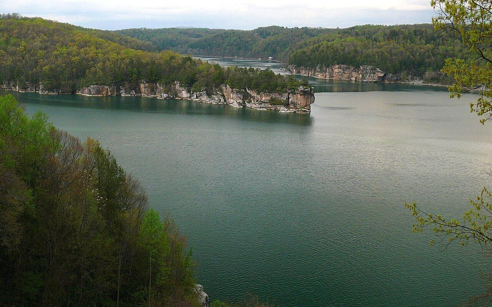

Clear water, warm summer surface temperatures, and sandstone cliffs that drop about 100 feet under the surface. It's a five-hour drive from DC and only open for diving in summer, so make a weekend of it.

Summersville Lake from above. Photo: Ken Thomas, public domain, via Wikimedia Commons.
At a glance
Where: Sarge's Dive Shop, 1706 Airport Road, Summersville, WV 26651, at Summersville Lake Marina. The shop floats on the lake.
From DC: about 315 miles, roughly 5 hours by car from the White House, mostly on I-81 and I-64. Plan on a weekend.
Season: Memorial Day weekend through Labor Day, says Sarge's. Its Facebook page says mid-May to mid-September, so call if you're going at either end.
Shop hours: Monday to Thursday 10 to 5, Friday to Sunday 9 to 6.
Contact: (304) 872-1782, sarges.net. Book charters and classes by phone, ahead of time.
The lake: built by the U.S. Army Corps of Engineers from 1960 to 1966 for flood control. About 2,700 acres and more than 300 feet deep at the dam.
Why divers drive this far
Sarge's calls Summersville the cleanest, clearest freshwater lake east of the Mississippi, and quotes Skin Diver magazine's old nickname for it, "The Little Bahamas of the East." That's their claim, but Scuba Diving magazine also says visibility here is better than most lakes.
Underwater you get huge cliffs, boulders, overhangs, rock walls and swim-throughs, with bass, walleye and catfish. Sarge's names Long Point Cliff as the top site, plus Bubble's Cave, The Overlook, Copperhead Cove and The Wall. Long Point is an elbow of the lake you can only reach by boat, and a small boat has been sunk in the lake for divers to visit.
Visibility: Sarge's says 20 to 40 feet in summer, depending on rain and temperature.
Surface temperature: 78 to 85°F from June through September, says Sarge's.
The cold layer: reviewers say it's real. One diver hit a thermocline around 22 feet that dropped the temperature about 10 degrees. Another found the water in the low 70s at the first thermocline.
Light: reviewers say it gets dark deeper down. One said it was completely dark below 60 feet at Long Point, and another found it dark below 25 feet on an overcast day. Bring a light.
After rain: one diver reported only 10 to 15 feet of visibility the day after a storm. Others report 30 feet or more on good days.
Prices at Sarge's
Per person, before 6% West Virginia sales tax. See Sarge's services page for current prices.
Two-tank dive charter: $70
Snorkel or swim charter: $70
Full set of rental gear (tank, wetsuit, regulator, BCD, gauges, weights): $70
Air fill: $12 a tank
Kayaks and paddleboards: from $25 an hour
Dinner cruise, about two hours from 4 PM: $70
Sarge's pages don't mention nitrox. Call if you need it.
Good to know for newer divers
Go with Sarge's boat the first time. The best sites, like Long Point, are boat-only, and the crew knows where to go. A reviewer who writes about the lake says there's no good shore diving. Older ScubaBoard posts describe training dives from the winter boat ramp, but we couldn't confirm current shore rules, so ask Sarge's.
Pick your depth on purpose. The cliffs drop about 100 feet and the lake goes past 300. It's easy to sink deeper than you planned along a wall, so watch your computer and agree on a turn depth with your buddy.
Don't jump off the cliffs. Cliff jumping at the lake has been banned since 2007 after people were hurt and killed.
Why the season is short: after Labor Day the Corps of Engineers lowers the lake about 75 feet for winter, releasing water for whitewater rafting on the Gauley River. Boating and diving wind down as the water drops.
Want a class here? Sarge's teaches NAUI and SDI courses on two-weekend schedules, with pool sessions in town and open water dives on the lake. See its training page.
Print our free shore dive emergency plan. Fill in the nearest hospital and the boat's plan for an emergency before your first dive.
Staying over
For camping, Sarge's suggests Mountain Lake Campground, (304) 872-6222. Summersville, a small town with motels and restaurants, is a few minutes from the marina. Nearby you'll also find rock climbing on the lake's cliffs, the Summersville Lake Lighthouse, and the New River Gorge.